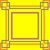

I already talked about this property before, it's used to make
the radius of the border curved.
Border images
It allows us to specify an image as the border around an element, pretty cool.
Multiple backgrounds
I also spoke about it before, you can use comma to put multiple backgrounds to an element.
Animations, effects and much more
I'm really excited to learn these, I already have learned SVG pretty well and from
what I have seen there are few stuff I'm already familiar with.
Box shadow
With the box-shadow property, you can attach one or more shadows to an element.
Gradients
Just like in SVG, there are two types of gradients, linear and radial.
Transform
Just like in SVG it allows you to rotate, scale, move and skew.
Transitions
Allows you to animate from one CSS property value to another.
Animations
Also allows you to animate, CSS animations have their own specifications, and they allow you to
create keyframes, set duration, easing, and more, just like SVG.
Vendor Prefixes
CSS vendor prefixes or CSS browser prefixes are a
way for browser makers to add support for new CSS features
during periods of testing and experimentation. Browser prefixes
are used to add new features that may not be part of the final
and formalCSS specification.
Remember before when I talked about position: sticky that we added
the position property more than once with different words at the start like
-webkit-, -moz-, etc? Thats what vendor prefixes are, and I added these
so that 90% of the browsers support the property.
Most browsers today will work without prefixes, however it's good to know these
for backwards capability and understanding of older codes.
Here is a list of vendor prefixes for each browser.
The border-radius property
I have already mentioned this property before, however, I wanted to talk more about it
since there are things I missed.
As you already know, with border-radius you can give any element rounded corners
border-radius: 20px;
Rounded Corners
Specific border radius values can be applied for border-radius
property in the following order: top-left, top-right, bottom-right and bottom-left.
Or you can also just use border-top-right-radius:, border-bottom-right-radius:, etc, which however takes more time to write.
A rectangle can be turned into a circle using only CSS.
To create a circle, the border-radius should be half
of height and the width.
You can also just write border-radius: 100%;, as long as the height
is same with the width it will work:
width: 200px;
height: 200px;
border-radius: 100%;
Circle
The border-image property
The border-image property can be used to add an
image to be the border of an element, it's not however
as simple as it sounds, lets take this image I made for example:

Thats a pretty well image to be used as the border, and you will understand why as I explain how border-image works.
The border-image property is a shortcut for all the following properties:
So, let me explain what border-image-slice does first, to understand what it does
you will need to understand the image:
In order to make this image the border of an
element we first need to define how we want it to be sliced.
The corners of the image, which I want to be the corners
of my border are squares with 20 pixels height and
20 pixels width each, so by writing border-image-slice: 20; I define
the corners of the image, then, everything between the corners,
will be added between the corners of the border, there are few different methods for this,
you can make it repeat, scale and others that I'm going to explain in a moment.
So, about border-reapeat property now, this property defines how we want the content
between the corners to fill the space, and this property can get four values,
which are the following:
stretch: stretch the image to fill the area. repeat: tile the image to fill the area. round: tile the image and scale it so it tiles uniformly filling the area, when you just repeat the image
there is a chance that the final tile may doesn't fit and be cut at half, with round value you can prevent it. space: tile the image and distribute left over space around tiles, its used for the same reason round is used,
but instead of scaling the tiles it distribute left over space around tiles.
Lets use another image now to test out the border-image-repeat property, since the image we
use now won't do, lets use this one:
style="border-image-repeat: stretch;"
Border image
style="border-image-repeat: repeat;"
Border image
style="border-image-repeat: round;"
Border image
style="border-image-repeat: space;"
Border image
When you use border-image-reapeat: space; also use background-clip: padding-box; or else the
background-color will be extended behind the border and the parts that are cut will be green too.
Now, I will speak about the following properties:
border-image-width border-image-outset
The border-width property defines the width of the border, the border-image-width however
defines only the width of the image, the image will not surpass the border and make the element box bigger
like the border-width would, lets try this:
The border-image-outset property can move the image outside the element box, for example,
lets move the image 30px outside the element box.
Border image
You can confirm that the border-image has moved outside the element box since the
outline isn't around the border-image, also, the border-image doesn't
effect the elements under it or over it, you can make it as big as you like and it will go beyond the other elements.
A last thing I want to talk about is the fill keyword which can be used after the
slice value in border-image property or border-image-slice property.
style="border-image-slice: 20 fill;
Border image
As you probably already noticed, it adds the center of the image which normally is
sliced off and since I used border-image-repeat: round; it repeats it and scales it to fill the whole element box.
The video below is a really nice tutorial that helped me a lot, check this out:
The outline property
This property works exactly like border, however, you can't edit each
side seperately like border, all sides are styled the same.
An outline is drawn just outside the border's edge of the element.
Outlines are generally used to indicate focus or active states of the
elements such as buttons, links, form fields, etc.
Outlines do not take up space, because they are always placed on top of trhe box
of the element.
Unline borders, outlines won't allow us to set each edge to a different width or
set different colors or styles for each edge. An outline is same in all sides.
Unline borders, outlines do not change the size or position
of the element and don't effect the elements around either.
You cannot create circular outlines.
The box-shadow Property
The box-shadow property applies shadow to elements.
It works pretty similar to text-shadow, however, it can take up to five values,
first is how much you want it to move on the horizontal axis, second
is how much you want it to move on the vertical axis, third is how
much you want it to blur, then how much you want it to spread (get bigger than the original) and then
it's the color which can be defined with many different ways as you probably already know.
Code:
<div style="width: 500px;
height: 150px;
background-color: green;
margin: 20px auto 20px auto;
box-shadow: 4px 10px 10px 5px black;">
</div>
Outcome:
You can of course also use multiple shadows by using comma, lets try this:
The standard selectors of CSS are
the basic selectors you can use to style elements, and
you are probably already familiar with most of these.
Here is a list of all the standard selectors:
* - universal selector
p - type selector
p, h1, div - compound selection
.class - group class selector
#id - unique id selector
The only selectors you may not be familiar with is the universal selector,
since I never used it before in the notes, this selector basically selects
all the elements, it can be well used together with the combinator selectors
which I'm going to cover in the next section.
Another selector you may not know is the compound selection, using
commas you can simply asign styling rules to multiple
elements together.
Combinator Selectors
Usually while writing CSS we use
many combinations to select specific elements,
thats what this section is gonna be about.
div p - selects all paragraphs in div
div > p - selects all direct child paragraphs in div
h3 + p - selects paragraph after h3
h3 ~ p - select all paragraphs that come after h3
When we want to select an element within
another element we usually write p span { color: red; } for example,
which makes all spans inside paragraphs be red,
this is a really common and helpful feauture.
Lets have an example to help you understand better:
Code:
<Style>
.example-bruh p {
color: red;
}
</Style>
<div class="example-bruh">
<h3>Hello, I'm a heading inside div</h1>
<p>Hello, I'm a paragraph inside div</p>
<article>
<p>Hello, I'm also a paragraph inside div</p>
</article>
</div>
Outcome:
Hello, I'm a heading inside div
Hello, I'm a paragraph inside div
Hello, I'm also a paragraph inside div
Another similar combinator we use is the > symbol,
which also targets the child of
specific element, but with one difference, it
only targetsdirect childs, the
paragraph inside the article for example would
not be targeted since it is not a direct child of
the div.
Code:
<Style>
.example-bruh2 > p {
color: red;
}
</Style>
<div class="example-bruh2">
<h3>Hello, I'm a heading inside div</h1>
<p>Hello, I'm a paragraph inside div</p>
<article>
<p>Hello, I'm also a paragraph inside div</p>
</article>
</div>
Outcome:
Hello, I'm a heading inside div
Hello, I'm a paragraph inside div
Hello, I'm also a paragraph inside div
Lets move to the next combinator selector, which is the
+ symbol, if I for example wrote h3 + p { text-decoration: underline }
every paragraph thats right after a h3 would get an underline
Code:
<Style>
.example-bruh3 h3+p{
text-decoration: underline;
}
</Style>
<div class="example-bruh3">
<h3>Hello I'm a heading</h3>
<p>I've got an underline baby</p>
<p>I'm sad because I don't have an underline</p>
<p>Me too, I also want an underline</p>
<p>Please daddy give me an underline too</p>
<h3>Bruh, I'm also a heading dude</h3>
<p>And I also have an underline</p>
<p>bruh that's unfair</p>
<p>I wish I could die</p>
<p>I don't really want an underline anyway</p>
</div>
Outcome:
Hello I'm a heading
I've got an underline baby
I'm sad because I don't have an underline
Me too, I also want an underline
Please daddy give me an underline too
Bruh, I'm also a heading dude
And I also have an underline
bruh that's unfair
I wish I could die
I don't really want an underline anyway
The last combinator selector I'm gonna talk about is
the ~ symbol, which works pretty similar to the +
symbol, however it selects all the elements after
the chosen element, see example:
Code:
<Style>
.example-bruh4 h3~p{
text-decoration: underline;
}
.example-bruh4 div {
text-align: center;
}
</Style>
<div class="example-bruh4">
<h3>Hello I'm a heading</h3>
<p>I've got an underline baby</p>
<p>I'm happy because I also have an underline</p>
<div>I'm a div, lmao</div>
<p>Yeah, an underline</p>
<p>Thanks daddy, I love my underline</p>
<h3>Hello heading, I'm also a heading</h3>
<p>We all have an underline</p>
<p>So cool</p>
<p>I've never been happier before</p>
<p>Did I ask for an underline? I'm gonna have to report it to the authorities.</p>
</div>
<p>I'm a paragraph outside the div</p>
Outcome:
Hello I'm a heading
I've got an underline baby
I'm happy because I also have an underline
I'm a div, lmao
Yeah, an underline
Thanks daddy, I love my underline
Hello heading, I'm also a heading
We all have an underline
So cool
I've never been happier before
Did I ask for an underline? I'm gonna have to report it to the authorities.
I'm a paragraph outside the div
Working with Pseudo-Classes
The CSS pseudo-classes allow us to style elements,
or parts of elements, that exist in the document tree
without using JavaScript or any other scripts. A pseudo-class
starts with a ":" (colon).
e:first-child - selects first child of element
e:last-child - selects last child of element
e:first-of-type - selects first child of it's type
e:last-of-type - selects last child of it's type
e:only-child - selects element only if it's the only child of it's parent element
e:only-of-type - selects element only if it is the only element of it's type inside it's parent element
e:empty - selects element only if it is empty
root - matches the document's root elements, it basically does
what writing html { color: red } would do
The :first-child matches an element that is the
first child element of some other element.
The :last-child matches an element that is the
last child element of some other element.
The first-of-type and last-of-type work the same way,
however, the difference is that they select the first/last child
that's the same type of element that you chose.
The only-child selects an element only if it's the
only child in it's parent element, see example below:
HTML code:
<div id="parent-div3">
<h3> I'm first child </h3>
<p>I'm a paragraph</p>
<h3> I'm last child </h3>
</div>
<div id="parent-div3">
<p>I'm the only child of my parent, and I'm lonely</p>
</div>
The only-of-type selects an
element only if it's the only one of
it's type inside it's parent element.
HTML code:
<div id="parent-div4">
<h3>This heading below me is such a weird heading, why is it so small?</h3>
<p>I'm sick of those headings, I wish I had a friend just like me</p>
<h3>It's not a heading idiot, it's a paragraph</h3>
</div>
<div id="parent-div4">
<p>Hello sister</p>
<p>Hello brother</p>
</div>
This heading below me is such a weird heading, why is it so small?
I'm sick of those headings, I wish I had a friend just like me
It's not a heading idiot, it's a paragraph
Hello sister
Hello brother
The empty selector selects only child elements
that are empty.
HTML code:
<div id="parent-div4">
<h3></h3>
<p>I'm a paragraph</p>
<h3> </h3> <!--This has a white space so it is not empty-->
<p></p>
<p></p>
<p> </p> <!--This has a white space so it is not empty-->
</div>
<div id="parent-div5">
<h3></h3>
<p></p>
</div>
Another nice pseudo-class that gives you
way more flexibility than the last/first-child and
can save you a lot of time you would have wasted rewriting code over and over
again is the nth-child.
More specifically, we have the following nth pseudo-classes:
So, nth-child(n) lets you specify which
child you want to select, for example, if I wanted to select
the third child I would write nth-child(3), if I wanted
to select the last child I would write nth-child(n).
The nth-last-child(n) works the same way, but it counts
reversed, if I wrote nth-last-child(2) it would select
the second child from the end.
Numbers however isn't the only value you can use, you can do some realy cool stuff
with this pseudo-class, for example, if I wrote
nth-child(even) it would select all odd numbers, such as
2, 4, 6, 8, etc, if I wrote nth-child(odd) it would select the
rest of the numbers, such as 1,3,5,7, etc.
See example below:
HTML code:
<div class="example2-idk" style="margin:50px;">
<p>this is a paragraph</p>
<p>this is a paragraph</p>
<p>this is a paragraph</p>
<p>this is a paragraph</p>
<p>this is a paragraph</p>
<p>this is a paragraph</p>
<p>this is a paragraph</p>
<p>this is a paragraph</p>
</div>
You can also write nth-child(2n+2) which gives same result
with nth-child(even) the 2n tells it to select
every two paragraphs, the 2 tells it to start from the
second paragraph
See example below:
HTML code:
<div class="example2-idk" style="margin:50px;">
<p>this is a paragraph</p>
<p>this is a paragraph</p>
<p>this is a paragraph</p>
<p>this is a paragraph</p>
<p>this is a paragraph</p>
<p>this is a paragraph</p>
<p>this is a paragraph</p>
<p>this is a paragraph</p>
</div>
The nth-of-type(d) works the same, but if for example there was
a heading in the example, it would only select the paragraphs, even
tho the heading is also a child of the div. The
nth-last-of-type(n) does the same but counts reversed, from end to start.
User Action Selectors
e:active - when user clicks the element
e:hover - when user hovers his mouse over the element
e:focus - when user focuses on the element (types on an input for example)
You have probably already heared about :active from links,
but this pseudo selector does not work only for links,
it can work on any element, see the example below:
HTML Code:
<div class="example69">
<p>Click and hold on me to make me bigger</p>
<p>I'm just a paragraph</p>
</div>
You are probably familiar with :hover as well, since it's also
used on links, it basically makes an effect appear after
the user hovers his mouse over an element, see
the example below:
The e:enabled and e:disabled is used to
decorate elements based on if they are enabled or
disabled, not all elements can be disabled and enabled,
only some can, such as forms, buttons and links I believe.
HTML Code:
<form class="form-example2">
<input type="text" name="username" placeholder="Enter your username" enabled>
<input type="number" name="age" placeholder="Enter your age" disabled>
<input type="email" name="password" placeholder="Enter your email" enabled>
<input type="password" name="password" placeholder="Enter your password" enabled>
</form>
CSS Code:
<style>
.form-example2 {
white-space: pre-line;
display: grid;
margin: 20px auto 20px auto;
}
.form-example2 input {
margin: 10px auto 10px auto;
}
.form-example2 input:enabled {
background-color: lightgreen;
}
.form-example2 input:disabled {
background-color: rgb(247, 104, 68);
}
</style>
Outcome:
The e:checked can be used for checkboxes and radio input types,
see example below:
Pseudo elements are used to select specific parts of an element.
There are five pseudo elements in CSS, each starting
with the double colon (::).
::first-line - the first line of text is selected ::first-letter - the first letter of text is selected ::selection - text that is selected by user is selected ::before - inserts some content before an element ::after - inserts some content after an element
HTML code:
<p class="iod">Hello this is first line <br>
Hello this is second line</p>
Hello this is first line
Hello this is second line
If you click and hold your mouse over the text to select it you will see
the ::selection effect.
Now that we got these out of the way, lets talk about ::after and ::before.
These two pseudo elements can only be used on html elements that
are closed, and that's because the content you add before or
after the specific element is added before or after
the element's content, not before or after
the element it self.
I already used the ::before pseudo element before
when I talked about how to style lists, you can check it out,
I basically used it to add an emoji before the list item.
To use these two pseudo elements you need to use the
contet property, you can add many stuff as the content,
for example, an image, or text which you should add
between "".
HTML code:
<div class="idkdude">
<p>Hello I'm a paragraph and I'm okay</p>
<p>Hello I'm a paragraph and I'm okay</p>
<p>Hello I'm a paragraph and I'm okay</p>
</div>
The attr() fuction can be used in content property
together with ::after or ::before pseudo elements
so that the content takes the value of a chosen
attribute.
Why would I ever need that? Well, from what I understand if it's used together with
JavaScript it makes it way easier to do cartain things, such as
making a notification bell for example, the number of the noficications you have
could simply change by changing the value of a made up attribute for example.
Also, this can be useful for other reasons too, and in this section, we are actually going to
make up a data-tooltip attribute and define cartain styling rules to it.
First, let me show you a simple example of how attr function works,
check the following code:
HTML code:
<div class="random-div">
<p id="paragraph-duh">Hello, I'm a paragraph </p>
<p id="zulu">Hello, I'm a paragraph </p>
<p id="idk">Hello, I'm a paragraph </p>
</div>
CSS code:
<style>
.random-div {
background-color: white;
border: 3px solid black;
border-radius: 20px;
width: 350px;
min-height: 100px;
text-align: center;
line-height: 50px;
margin: auto;
}
.random-div p::after{
content: " and my id is ''"attr(id)"'' ";
}
</style>
Outcome:
Hello, I'm a paragraph
Hello, I'm a paragraph
Hello, I'm a paragraph
As you can see, this simply trick I used saved me a lot of time, all I had to
do is change the id of the paragraph and the
text changed too.
Now, lets try to create a data-tooltip of a button
using pure CSS.
HTML code:
<div class="button">
<div data-tooltip="It will refresh the page"><a href="#">Click me</a></div>
<p data-tooltip="If you press this, page 10 will open, isn't that
nice how the tooltip gets bigger when there is much text in it btw?"><a href="../CSS-Notes/Notes10.html">Click me</a></p>
</div>
Now, every element with the data-tooltip attribute will be assigned these styling rules.
The Attribute Selectors
e[att] - decorates any element that has this attribute.
e[att="val"] - decorates any element that has this attribute with this value.
e[att~="val"] - decorates any element that has this word inside the value, there can be
many different words inside an attribute, for example, title="hello apple", I could write
[att~="apple"] and it would still decorate the element because the word apple is in it.
e[att^="val"] - decorates any element that starts with this value, for example,
if I wanted to style all links that start with http I would write a[href^="http"].
e[att$="val"] - decorates any element that ends with this value, if for example
I wanted to decorate all links that end with com I would write a[href$="com"].
e[att*="val"] - decorates any element that has this attribute with this word
inside it just like att~="val", however, it doesn't need to have spaces before and after,
for example, an element with title="second" attribute could be styled by writing [title="cond"], since
cond is inside second.
e[att|="val"] - is used for attributes that are listed like this (first-value, second-value, third-value), if for example
the element had title="second-value" attribute I could write [title="second"] and it would decorate it.
The word-wrap property allows long words
to be broken and wrapped into the next line
if they don't fit in their container, this property takes only two values,
normal and break-word.
Code:
<div style=" width: 200px;
padding: 20px;
margin: 20px auto 20px auto;
border: 3px solid black;
border-radius: 20px;
background-color: white;
word-wrap: normal;">
Hello, I'm a div and here is a very long word:
aaaaaaaaaaaaaaaaaaaaaaaaaaaaaaaaaaaaaaaaaaaaaaaaaaaaaaaaaaaaaaaaaaa
</div>
<div style=" width: 200px;
padding: 20px;
margin: 20px auto 20px auto;
border: 3px solid black;
border-radius: 20px;
background-color: white;
word-wrap: break-word;">
Hello, I'm a div and here is a very long word:
aaaaaaaaaaaaaaaaaaaaaaaaaaaaaaaaaaaaaaaaaaaaaaaaaaaaaaaaaaaaaaaaaaa
</div>
Outcome:
Hello, I'm a div and here is a very long word:
aaaaaaaaaaaaaaaaaaaaaaaaaaaaaaaaaaaaaaaaaaaaaaaaaaaaaaaaaaaaaaaaaaa
Hello, I'm a div and here is a very long word:
aaaaaaaaaaaaaaaaaaaaaaaaaaaaaaaaaaaaaaaaaaaaaaaaaaaaaaaaaaaaaaaaaaa
The @font-face Rule
The @font-face rule allows custom fonts to be
loaded into a webpage.
With the help of this rule, designs are no longer limited to the fonts
that are installed on a user's computer.
In Internet Explorer 8 and earlier, the URL
must point to an Embedded Open Type (eot) file, while
Firefox, Chrome, etc support True Type Fonts
(ttf) fonts and Open Type Fonts (otf).
Firefox - .ttf, .otf
Safari - .ttf, .otf
Chrome - .ttf, .otf
Opera - .ttf, .otf
Internet Explorer - .eot
Each form of the font-family must be declared using the
@font-face rule, in the example below, a custom font called
"Delicious" is loaded and used for the paragraph.
Code:
<Style>
@font-face {
font-family: Delicious;
src: url('Delicious-Roman.otf');
}
@font-face {
font-family: Delicious;
font-weight: bold;
src: url('Delicious-Bold.otf');
}
.paragraph-example {
font-family: Delicious;
}
</Style>
<p class="paragraph-example">
There isn't any file named Delicious-roman.otf,
I just gave an example, the text will keep the default font-family.
</p>
Outcome:
There isn't any file named Delicious-roman.otf,
I just gave an example, the text will keep the default font-family.
Internet Explorer has a built-in bug
when multiple @font-face rules are defined. Using
#iefix as shown below fixes the problem: